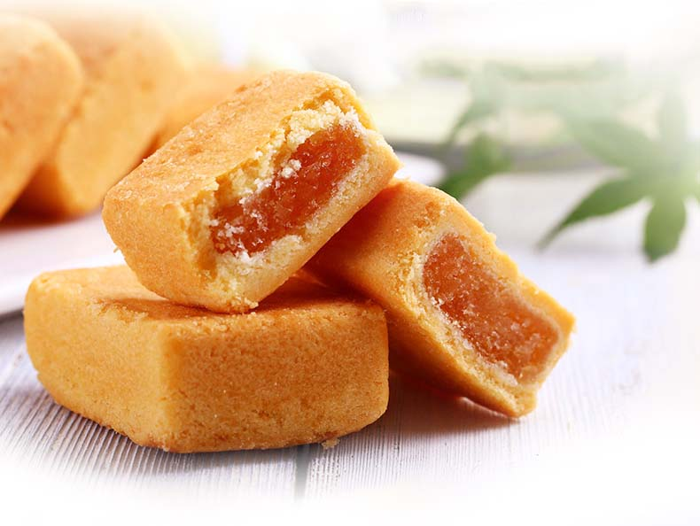
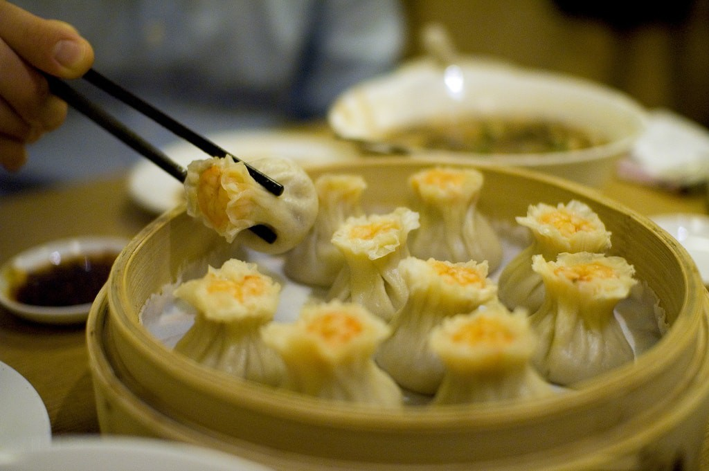
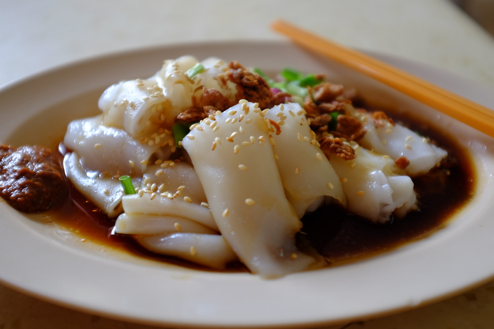
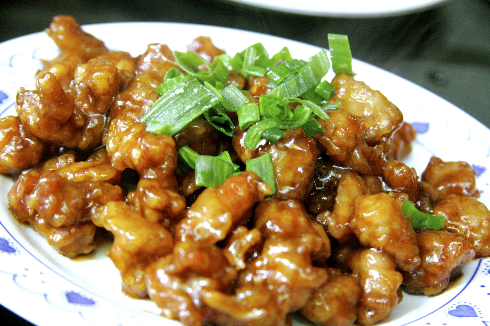
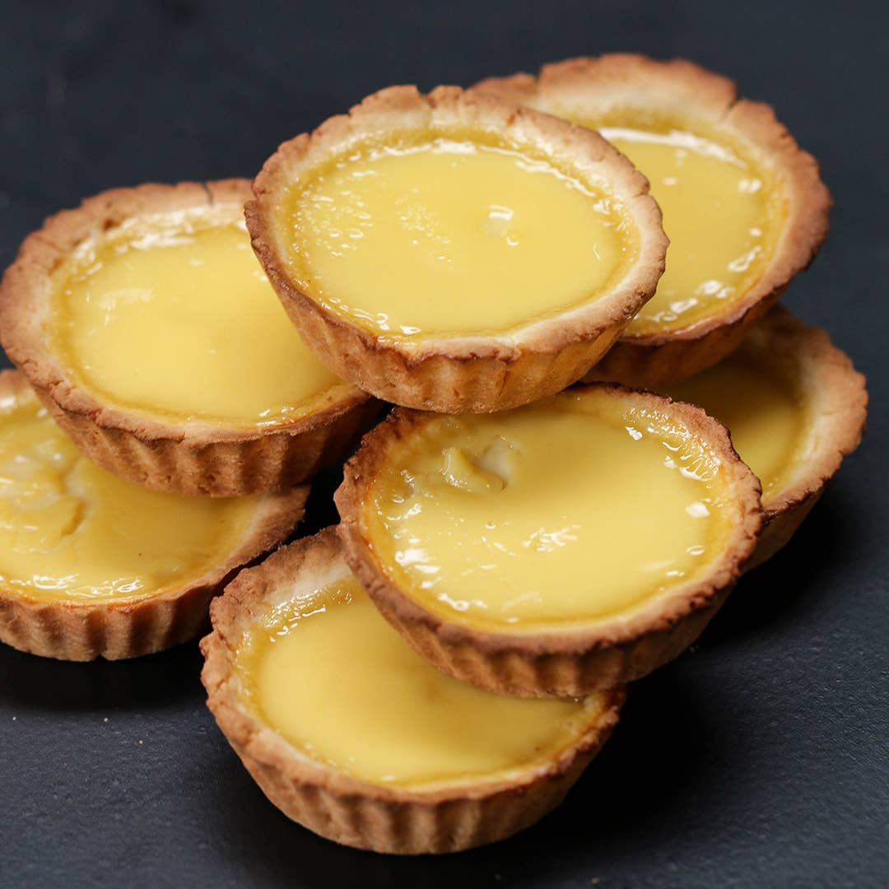
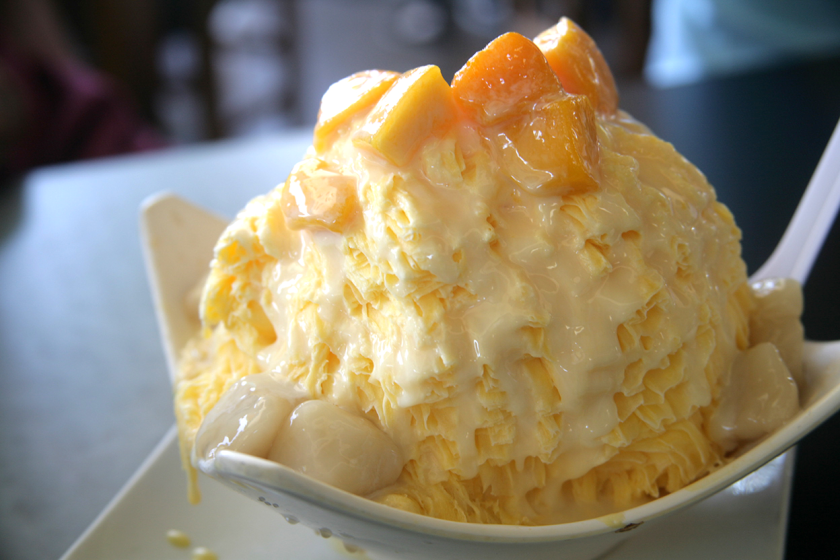

"Xiao Long Bao" es un plato originario del Este de China, que consiste de una masa rellena de sopa y carne, cocinados al vapor en cestas de bambú

Taiwanese Pinapple Cake
"Pinapple Cake" es un plato originario de Taiwan, que consiste de una masa dulce rellena de una mermelada de anana con trozos de anana. Se acompaña muy bien con un té verde

Siu Mai
"Siu Mai" es un plato originario de China, que consiste de una masa al vapor, que puede ser rellena
con una variedad de ingredientes, como cerdo, camarones, etc.

Taiwanese Pinapple Cake
"Pinapple Cake" es un plato originario de Taiwan, que consiste de una masa dulce rellena de una mermelada de anana con trozos de anana. Se acompaña muy bien con un té verde

Taiwanese Pinapple Cake
"Pinapple Cake" es un plato originario de Taiwan, que consiste de una masa dulce rellena de una mermelada de anana con trozos de anana. Se acompaña muy bien con un té verde

Taiwanese Eggtart
Este plato con origen Chino y Europeo,que consiste de una masa dulce rellena de crema de huevo al horno.
Fried Dumplings
Este plato es muy popular mundialmente y de los más conocidos de la cultura china. Este consiste de una masa fina rellena de carne/cerdo/mariscos y verduras, que puede ser cocinados tanto a la plancha como hervidos.

Taiwanese Shaved Ice
Uno de los postres orientales más populares que consiste de ralladura de hielo cubierto de varios tipos de salsas y toppings a elección.
Mapo Tofu
"Mapo Tofu" es de los platos mas clásicos chinos. Este consiste de carne picada, tofu y especias. La mejor forma de comerlo es con mucho picante, y con un bowl de arroz.
Pekin Duck
El "Pato pekines" tiene sus raices en la provincia de Pekin, en donde se cocina el pato con una salsa agridulce en un horno, hasta que la piel quede crocante y la carne tierna. Se sirve con variedades de salsas y "Mantou" (Pan al vapor)